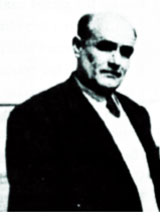

Abdurrahim Zapsu (1890-1958)

Bediüzzaman’ýn Rusya’da esarette iken, kampý teftiþe gelen kumandana ayaða kalkmamasý olayýný ilk defa Abdurrahim basýna duyurdu. Bilindiði gibi bu hadise 1917 yýlýnda Moskova’nýn kuzeydoðusundaki Volga Nehri kenarýnda bulunan Kosturma’da cereyan etti. Zapsu, bu hadiseyi bir subaydan dinlemiþti. Buna karþýlýk Bediüzzaman, aradan otuz yýl geçmesine raðmen olayý kimseye anlatmamýþtý. Abdurrahim, bu hadiseyi 1948 yýlýnda Ehl-i Sünnet mecmuasýnda yayýmlattýðý makalesi ile duyurdu. Neþredilen makale Bediüzzaman’a okununca þunlarý söylemiþtir:“O esaret hadisesinin aslý doðrudur. Fakat þahidim olmadýðýndan tafsilen beyan etmemiþtim. Yalnýz bir manganýn beni idam etmek için geldiðini bilmiyordum, sonra anladým. Ve Rus kumandaný tarziye için Ruþça bir þeyler söyledi, ben bilmedim. Demek, hazýr bulunan ve bu hadiseyi gazeteye ihbar eder Müslüman Yüzbaþý anlamýþ ki, kumandan tekrar tekrar ‘affet’ demiþ.” (http://www.risale-inur.org/yenisite/moduller/sonsahitler/bolgeindex.php?id=2) Yýllar sonra Emirdað’ýnda sürgün tutulan Bedizzaman’ý burada ziyaret eden Abdurrahim böylece irtibatýný devam ettirmiþtir. Buna karþýlýk 1958 yýlýnda Ýstanbul’a gelen Bediüzzaman’ýn, Abdurrahim Zapsu’ya misafir olduðu nakledilmektedir.
Abdurrahim Zapsu’nun adý direkt olarak Risâle-i Nurda geçmemekte, Pakistan’dan yazan Seyyid Salih’in bir mektubunda geçmektedir. Seyyid Salih, Pakistan’da Bediüzzaman’a karþý büyük bir saygý ve sevginin varlýðýna iþaret etmiþ, Üstadla olan irtibatýndan dolayý burayý ziyaret eden Abdurrahim Zapsu’ya büyük hürmet gösterildiðini, Üstadýmýz (Bediüzzaman) yerine Zapsu’nun ellerini öptüklerini ve duâ talebinde bulunduklarýný belirtmiþtir. (Emirdað Lâhikasý, s. 304).
Abdurrahim, soyadý kanunundan sonra, Zapsu soyadýný almýþtýr. Bu adý, Hakkari il sýnýrlarý dahilinde bulunan Zap Suyu’na atfen aldýðý belirtilmektedir. Hidayet Hanýmla evlenmiþ ve evlilikten ikisi kýz ve ikisi erkek olmak üzere dört çocuðu dünyaya gelmiþtir. Abdurrahim’in torunu olan Cüneyt Zapsu’nun babasý ise büyük oðul Mustafa Pertev’dir.
Abdurrahim Zapsu 1947-48 yýllarýnda bir kýzýný Alman, diðerini Fransýz lisesinde okutmuþtur. Bu yabancý okullarda okutulma konusu, Cüneyt Zapsu’nun baþbakan danýþmaný olduðu yakýn dönemde, eleþtiri konusu yapýlmýþtýr.
Necip Fazýl Kýsakürek’in öncülüðünde kurulan Büyük Doðu Cemiyeti’nin kurucu üyesi olan Abdurrahim Zapsu, Ýstanbul’da bulunan Dicle Talebe Yurdu’nda yöneticilik yaptý. Bu yurtta daha çok Doðu Anadolu’dan gelen öðrenciler kalmakta idi. Musa Anter de bu yurtta kalmýþ ve daha sonra Abdurrahim Zapsu’nun kýzý olan Ayþe Hale ile evlenmiþtir.
Hakkýnda çok fazla ayrýntýlý bilgi bulunmayan Abdurrahim Zapsu’nun adý, Baþbakan danýþmanlýðýný yapan ve dedesine ait olan iki ciltlik “Büyük Ýslam Tarihi”ni yeniden neþrettirerek milletvekillerine daðýttýran Cüneyt Zapsu ile gündeme gelmiþ ve hakkýnda muhtelif yazýlar yazýlmýþtýr. Abdurrahim Zapsu’nun Bediüzzaman’ýn “talebesi”, “arkadaþý”, Ruslara karþý Bitlis’te Bediüzzaman Said Nursî ile birlikte savaþan kiþi olduðu ifade edilmiþtir. Cüneyt Zapsu, eseri yeniden neþrederken önsözde dedesinin vasiyetine de yer vermiþtir. Bu vasiyetinde hakkýný helâl etmeyi, namaz kýlmalarý þartýna baðlamýþ ve özellikle namaz hususunda ýsrarcý olmuþtur.
Cüneyt Zapsu’nun basýnda yer alan ifadelerine göre; Abdurrahim Zapsu Kürt Talebe Ümit Cemiyeti’ni kurmuþ, Kürt Teali Cemiyeti’nin üyeleri arasýnda yer almýþtýr. Ancak, Þeyh Said hadisesine karýþmamýþ ve katýlmamýþtýr. Kürt talebelerle ilgilenmiþ, eðitimleriyle uðraþmýþtýr. Bu uðraþta aðýrlýk mânevî ve dini eðitim olmuþtur. Ayrýlýkçý bir faaliyet içinde bulunmamýþtýr. Cüneyt Zapsu, dedesinin dostlarý arasýnda Hem Said Nursî’nin hem de Necip Fazýl’ýn olduðunu ifade etmiþtir.
Abdurrahim Zapsu 1958 yýlýnda vefat etmiþ ve Edirne Kapý mezarlýðýnda defnedilmiþtir. Bazý eser ve makalelerinin yanýnda þiirleri de neþredilmiþtir. Bunlardan örnekler:
Ulu Rabbim, bizi affet, ne kadar noksanýz.
Aciziz kulluðu yapmakta, evet, insanýz.
Tanýrýz, ümmetiyiz, Ahmed’ine hayrânýz.
Gönül ümitle dolu; aðlýyoruz, nâlânýz.
Baþka bir güzel manzumesi:
Selâhaddin-i Eyyubî’lerin, Târýk’larýn nerede?
Uyan ey âlem-i Ýslâm, sana gafil diyen vardýr.
Evet, silkin bu cehlinden, sana cahil diyen vardýr.
Cihana ilmi öðrettin, neden cehlin esirisin.
Senin nurunla âlem, ilmi öðrendi, terakkîler.
Senin mahsûl-i feyzindir, temeddünler, taharrîler.
Hani Sýddîk u Faruk’un, hani Osmân, hani Haydar!
Gazâlilerle Râzîler, ne oldu Ýbni Sinâlar!
Hani Osman Gazi’ler, büyük Fatih’lerin nerede?
O Yavuz’lar ne oldu, nerede kaldý azm ile iman?
Neden ilmi býraktýn, bunu mu emrediyor Kur’ân?